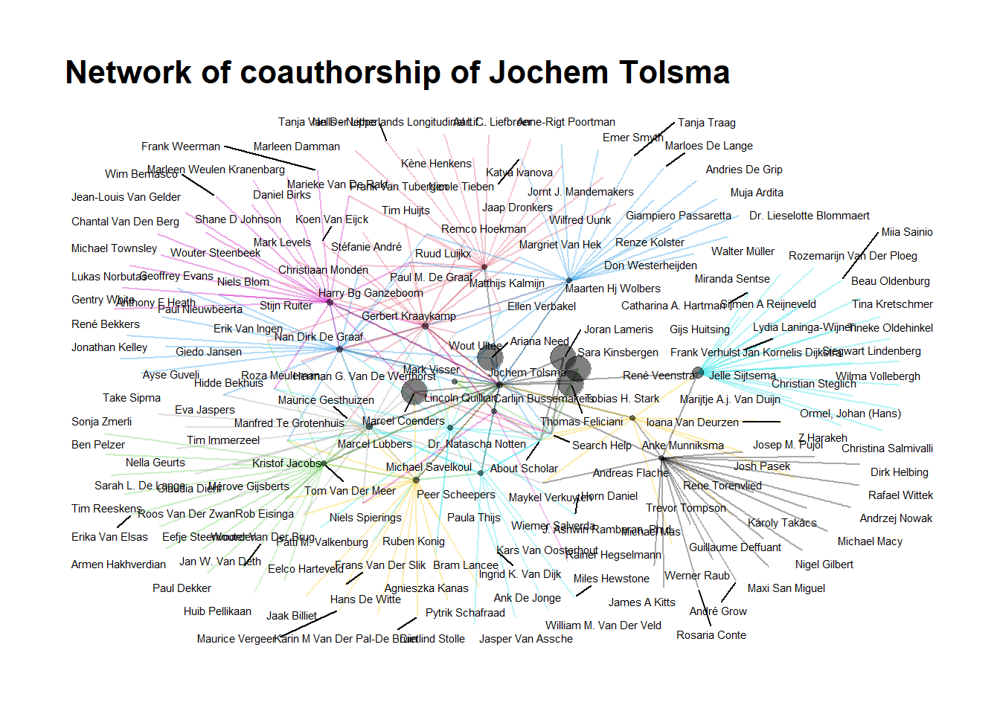

###Title: Webscraping in R Author: Bas Hofstra Version: ### 29-07-2
# start with clean workspace
rm(list = ls())
# install.packages('data.table')
library(data.table) # mainly for faster data handling
library(tidyverse) # I assume you already installed this one!
#install.packages('httr') # we don't need this for now require(httr)
#install.packages("devtools")
require(devtools)## Loading required package: devtools## Loading required package: usethis#install.packages("rvest")
require(rvest)
# rvest:This is the explanation the writers of the package give: “rvest is new package that makes it easy to scrape (or harvest) data from html web pages.” Seems like something we need, a package that stores information from webpages into relatively structured data that we can then query/manipulate.
#install.packages("xml2")
require(xml2)
#xml2:This is what the writers of the package say about it: “Work with XML files using a simple, consistent interface.” So we can manipulate the data scraped with rvest, using the xml2 package functions
#Note we're doing something different here. We're installing a *latest* version directly from
#GitHub This is because the released version of this packages contains some errors!
devtools::install_github("jkeirstead/scholar")## Using GitHub PAT from the git credential store.## Skipping install of 'scholar' from a github remote, the SHA1 (2d38dcc3) has not changed since last install.
## Use `force = TRUE` to force installationrequire(scholar)## Loading required package: scholarlibrary(dplyr)
#define workdirectory, note the double *backslashes* if you're on windows setwd('/yourpathhere)'goal: get to know
(i) who the Radboud University Department of Sociology staff is,
(ii) what they publish with respect to scientific work, and
(iii) who they collaborate with.
soc_staff <- read_html("https://web.archive.org/web/20230528153336/https://www.ru.nl/sociology/research/staff/") #extracts the source html of a webpage
head(soc_staff)## $node
## <pointer: 0x0000023602afed50>
##
## $doc
## <pointer: 0x00000236018ff180>#which object?
class(soc_staff)## [1] "xml_document" "xml_node"#so we need to find WHERE the table is located in the html 'inspect element' in mozilla firefox or
# view page source' and you see that everything AFTER /td in the 'body' of the page seems to be
# the table we do need
# soc_staff_0 <- soc_staff %>%
# rvest::html_nodes("body") %>%
# xml2::xml_find_all("//td") %>% # xml2 here looks across multiple layers/ child-elements (hence the // !!! )
# rvest::html_text()
#
#
# # BETTER?
# # using html_elements to ONLY USE ONE PACKAGE (RVEST)
soc_staff <- soc_staff %>%
rvest::html_elements("body") %>%
rvest::html_elements ("td") %>%
rvest::html_text()
#
#
# view(soc_staff)
#
# # Get whole table at once?
# soc_staff_1 <- soc_staff %>%
# rvest::html_elements("body") %>%
# rvest::html_table()
#view(soc_staff_1)
#class(soc_staff_1) # list (you can turn into a data frame to use it for further data manipulatino fromhere on)
# (fshowdf) to make output look pretty (but i probably misunderstood what exactly Jochem said)#do it for Leiden University
leiden_polsci_staff <- read_html("https://www.universiteitleiden.nl/en/academic-staff/overview?pageNumber=1&faculty=social-and-behavioural-sciences&facultyinstitute=institute-of-political-science") #extracts the source html of a webpage
# div id content
# section
# ul class table list
leiden_polsci_staff_2 <- leiden_polsci_staff %>%
rvest::html_elements("body") %>%
rvest::html_elements("li") %>%
rvest::html_elements("strong") %>%
rvest::html_text()
view(leiden_polsci_staff_2)#Assigning even and odd rows to 'fodd' and 'feven' (bc the output just lists the left and right side of the table interchangably)
fodd <- function(x) x%%2 != 0
feven <- function(x) x%%2 == 0
# How long are the data? nstaf beinhalted wie viele staff members es gibt ABER ist z.Z. noch falsch weil jede zweite Zeile information und kein Name ist)
nstaff <- length(soc_staff)
nstaff## [1] 102#make variable that holds all the names (aka. all the information in uneven rows)
soc_names <- soc_staff[fodd(1:nstaff)]
# needs to be 0:nstaff instead of 1:nstaff
#(because the list positions start with 0 NOT with 1)
#OR insert the fODD function here
# because the names are actually in the uneven rows, as opposed to the SNASS example where they are in even-numbered rows
head(soc_names)## [1] "Staff:" "Batenburg, prof. dr. R. (Ronald)"
## [3] "Begall, dr. K.H. (Katia)" "Bekhuis, dr. H. (Hidde)"
## [5] "Berg, dr. L. van den (Lonneke)" "Blommaert, dr. L. (Lieselotte)"#
soc_expertise <- soc_staff[feven(1:nstaff)] #in the 1 until 94st number, get the even elements
head(soc_expertise)## [1] "Expertise:"
## [2] "Healthcare, labour market and healthcare professions and training"
## [3] "Family, life course, labour market participation, division of household tasks and gender norms"
## [4] "Welfare state, nationalism and sports"
## [5] "Family, life course and transition to adulthood"
## [6] "Discrimination and inequality on the labour market"#put the two vectors [variables in Vero's mind] (names and exptertise) together in a data frame (list)
soc_df <- data.frame(cbind(soc_names, soc_expertise)) #columnbind those and we have a DF for soc staff!
# inspect in environment -> Data
#inspect again, and remove the rows we don't need (check for yourself to be certain!)
delrows <- which(soc_df$soc_names == "Staff:" | soc_df$soc_names == "PhD:" | soc_df$soc_names == "External PhD:" |
soc_df$soc_names == "Guest researchers:" | soc_df$soc_names == "Other researchers:")
soc_df <- soc_df[-delrows, ]
# inspect in environment -> Data# gsub is a function that remove something and replaces it with something else
# select only last names aka. DELETE everything BEHIND a comma
# [because the staff is listed with the last name in first place like e.g.: Müller, K. (Katrin) MSc]
#Last name seems to be everything before the comma
soc_df$last_name <- gsub(",.*$", "", soc_df$soc_names)
# first name is everything between brackets
# stringr PACKAGE NEEDED
# install.packages("stringr")
# STILL DOESNT WORK BC NEWEST stringr PACKAGE FUCKS SHIT UP
# INSTALL AN OLDER VERSION OF THE PACKAGE:
# install.packages("devtools")
# devtools::install_version("stringr", version = "1.4.1")
# soc_df$first_name <- str_extract_all(soc_df$soc_names, "(?<=\\().+?(?=\\))", simplify = TRUE)
# still does not work
#My own attempt at fixing above mistake:
# soc_df$first_name_TRY <-substr(soc_df$soc_names, start = "(", stop = ")")
require(tidyverse)
soc_df$first_name <- str_extract_all(soc_df$soc_names, "(?<=\\().+?(?=\\))", simplify = TRUE)
view(soc_df)soc_df$last_name <- gsub(" J. \\(Jansje\\) van MSc", "", soc_df$last_name)
soc_df$first_name <- tolower(soc_df$first_name) # everything to lower!
soc_df$last_name <- tolower(soc_df$last_name)
# trimws() looses all spacing before and after (if you specify 'both') a character string
soc_df$last_name <- trimws(soc_df$last_name, which = c("both"), whitespace = "[ \t\r\n]")
soc_df$first_name <- trimws(soc_df$first_name, which = c("both"), whitespace = "[ \t\r\n]")
soc_df$soc_expertise <- trimws(soc_df$soc_expertise, which = c("both"), whitespace = "[ \t\r\n]")
soc_df$soc_names <- trimws(soc_df$soc_names, which = c("both"), whitespace = "[ \t\r\n]")# create a variable that contains a character string “radboud university” for all.
soc_df$affiliation <- "radboud university"
view(soc_df)# The 'for loop': for every i in a vector (can be numbers, strings, etc.), say 1 to 10, you can do
# 'something'
for (i in 1:10) {
print(i) # So for every i from 1 to 10, we print i, see what happens!
}## [1] 1
## [1] 2
## [1] 3
## [1] 4
## [1] 5
## [1] 6
## [1] 7
## [1] 8
## [1] 9
## [1] 10# # or do something more complicated p <- rnorm(10, 0, 1) # draw 10 normally distributed numbers
# with mean 0 and SD 1 (so z-scores, essentially) plot(density(p)) # relatively, normal, right? u
# <- 0 # make an element we can fill up in the loop below for (i in 1:10) { u[i] <- p[i]*p[i] # get
# p-squared for every i-th element in vector p print(u[i]) # and print that squared element }soc_df$gs_id <- "" # we set an empty identifier
# using get_scholar_id()
# The function get_scholar_id needs a last name, first name, and affiliation.
require(scholar)
#downloaded function:
get_scholar_id_fix <- function (last_name = "", first_name = "", affiliation = NA)
{
if (!any(nzchar(c(first_name, last_name))))
stop("At least one of first and last name must be specified!")
site <- getOption("scholar_site")
url <- paste0(site, "/citations?view_op=search_authors&mauthors=",
first_name, "+", last_name, "&hl=en&oi=ao")
page <- get_scholar_resp(url)
if (is.null(page))
return(NA)
aa <- httr::content(page, as = "text")
# added by Bas Hofstra: bugfix for IDs that have a dash ("-")
ids <- substring(aa, regexpr(";user=", aa))
ids <- substr(ids, 1, 19) # error prone, but unsure how to solve otherwise
# if (nchar(stringr::str_extract_all(string = aa, pattern = ";user=[[:alnum:]]+[[:punct:]]")[[1]][1]) < 18) {
# ids <- stringr::str_extract_all(string = aa, pattern = ";user=[[:alnum:]]+[[:punct:]]+[[:alnum:]]+[[:punct:]]")
# } else {
# ids <- stringr::str_extract_all(string = aa, pattern = ";user=[[:alnum:]]+[[:punct:]]")
# }
if (length(unlist(ids)) == 0) {
message("No Scholar ID found.")
return(NA)
}
ids <- ids %>% unlist %>% gsub(";user=|[[:punct:]]$", "",
.) %>% unique
if (length(ids) > 1) {
profiles <- lapply(ids, scholar::get_profile)
if (is.na(affiliation)) {
x_profile <- profiles[[1]]
warning("Selecting first out of ", length(profiles),
" candidate matches.")
}
else {
which_profile <- sapply(profiles, function(x) {
stringr::str_count(string = x$affiliation, pattern = stringr::coll(affiliation,
ignore_case = TRUE))
})
if (all(which_profile == 0)) {
warning("No researcher found at the indicated affiliation.")
return(NA)
}
else {
x_profile <- profiles[[which(which_profile !=
0)]]
}
}
}
else {
x_profile <- scholar::get_profile(id = ids)
}
return(x_profile$id)
}
#TRYING get_scholar_id from ONE staff member first
# SETTING SOURCE:
#source("C:/Users/Vero/OneDrive - Radboud Universiteit/Documents/GitHub/labjournal")
# DOES NOT WORK BUT WORKS IF YOU DEFINE FUNCTION IN THE SAME SCRIPT YOU ARE WORKINGIN
# Put the function_fix.R in your working directory, we need this first line.
# Vero: I put the function in an R-Script and saved it in the same folder as the script I have open rn.
get_scholar_id_fix(last_name = "tolsma", first_name = "jochem", affiliation = "radboud university")## [1] "Iu23-90AAAAJ"get_profile("Iu23-90AAAAJ") # Jochem's profile## $id
## [1] "Iu23-90AAAAJ"
##
## $name
## [1] "Jochem Tolsma"
##
## $affiliation
## [1] "Professor, Radboud University Nijmegen / University of Groningen"
##
## $total_cites
## [1] 3475
##
## $h_index
## [1] 27
##
## $i10_index
## [1] 43
##
## $fields
## [1] "social divisions between groups" "segregation"
## [3] "inequality"
##
## $homepage
## [1] "http://www.jochemtolsma.nl/"
##
## $coauthors
## [1] "Gerbert Kraaykamp" "Tom van der Meer" "Maarten HJ Wolbers" "Michael Savelkoul"
## [5] "Stijn Ruiter" "peer scheepers" "Marcel Lubbers" "Joran Lameris"
## [9] "Marcel Coenders" "Nan Dirk de Graaf" "Sara Kinsbergen" "Carlijn Bussemakers"
## [13] "dr. Natascha Notten" "Tobias H. Stark" "Thomas Feliciani" "Andreas Flache"
## [17] "Matthijs Kalmijn" "Lincoln Quillian" "Ariana Need" "Marloes de Lange"
##
## $available
## [1] 14
##
## $not_available
## [1] 0get_publications("Iu23-90AAAAJ") # Jochem's pubs## title
## 1 Ethnic diversity and its effects on social cohesion
## 2 Anti-Muslim attitudes in the Netherlands: Tests of contradictory hypotheses derived from ethnic competition theory and intergroup contact theory
## 3 The impact of neighbourhood and municipality characteristics on social cohesion in the Netherlands
## 4 The effects of parental reading socialization and early school involvement on children’s academic performance: A panel study of primary school pupils in the Netherlands
## 5 Who is bullying whom in ethnically diverse primary schools? Exploring links between bullying, ethnicity, and ethnic diversity in Dutch primary schools
## 6 Ethnic competition and opposition to ethnic intermarriage in the Netherlands: A multi-level approach
## 7 Education and cultural integration among ethnic minorities and natives in the Netherlands: A test of the integration paradox
## 8 When do people report crime to the police? Results from a factorial survey design in the Netherlands, 2010
## 9 Trends in ethnic educational inequalities in the Netherlands: a cohort design
## 10 Does intergenerational social mobility affect antagonistic attitudes towards ethnic minorities?
## 11 Explaining participation differentials in Dutch higher education: the impact of subjective success probabilities on level choice and field choice
## 12 The impact of adolescents' classroom and neighborhood ethnic diversity on same‐and cross‐ethnic friendships within classrooms
## 13 Neighbourhood ethnic composition and voting for the radical right in The Netherlands. The role of perceived neighbourhood threat and interethnic neighbourhood contact
## 14 Co-occurrence of adverse childhood experiences and its association with family characteristics. A latent class analysis with Dutch population data
## 15 Losing Wallets, Retaining Trust? The Relationship Between Ethnic Heterogeneity and Trusting Coethnic and Non-coethnic Neighbours and Non-neighbours to Return a Lost Wallet
## 16 Educational expansion and field of study: trends in the intergenerational transmission of educational inequality in the Netherlands
## 17 How friends’ involvement in crime affects the risk of offending and victimization
## 18 Bringing the beneficiary closer: Explanations for volunteering time in Dutch private development initiatives
## 19 At which geographic scale does ethnic diversity affect intra-neighborhood social capital?
## 20 Onderwijs als nieuwe sociale scheidslijn? De gevolgen van onderwijsexpansie voor sociale mobiliteit, de waarde van diploma's en het relatieve belang van opleiding in Nederland
## 21 The NEtherlands Longitudinal Lifecourse Study (NELLS, Panel): Codebook
## 22 Explaining monetary donations to international development organisations: A factorial survey approach
## 23 Naar een open samenleving?
## 24 How, when and where can spatial segregation induce opinion polarization? Two competing models
## 25 Where does ethnic concentration matter for populist radical right support? An analysis of geographical scale and the halo effect
## 26 Social origin and occupational success at labour market entry in The Netherlands, 1931–80
## 27 Ethnic hostility among ethnic majority and minority groups in the Netherlands: an investigation into the impact of social mobility experiences, the local living environment and …
## 28 Kudos make you run! How runners influence each other on the online social network Strava
## 29 Preferences for work arrangements: A discrete choice experiment
## 30 Perceptions as the crucial link? The mediating role of neighborhood perceptions in the relationship between the neighborhood context and neighborhood cohesion
## 31 Under what conditions do ethnic minority candidates attract the ethnic minority vote? How neighbourhood and candidate characteristics affected ethnic affinity voting in the …
## 32 Trust and contact in diverse neighbourhoods: An interplay of four ethnicity effects
## 33 Explaining natives' interethnic friendship and contact with colleagues in European regions
## 34 Combating hooliganism in the Netherlands: An evaluation of measures to combat hooliganism with longitudinal registration data
## 35 Opleiding als sociale scheidslijn. Een nieuw perspectief op een oude kloof.
## 36 De burger als rechter
## 37 Size is in the eye of the beholder: How differences between neighbourhoods and individuals explain variation in estimations of the ethnic out-group size in the neighbourhood
## 38 De onderwijskansen van allochtone en autochtone Nederlanders vergeleken: een cohort-design
## 39 Exposure to asylum seekers and changing support for the radical right: A natural experiment in the Netherlands
## 40 Like two peas in a pod? Explaining friendship selection processes related to victimization and offending
## 41 Netherlands Longitudinal Lifecourse Study-NELLS Panel Wave 1 2009 and Wave 2 2013-versie 1.2
## 42 Running together: How sports partners keep you running
## 43 Aangiftebereidheid: Welke overwegingen spelen een rol bij de beslissing om wel of niet aangifte te doen?
## 44 Variation in the educational consequences of parental death and divorce
## 45 De aangifte van delicten bij de multichannelstrategie van de politie
## 46 Taakstraffen langs de lat: strafopvattingen van Nederlanders
## 47 Household dysfunction and child development: Do financial resources matter?
## 48 Parents, television and children's weight status: On lasting effects of parental television socialization in the Netherlands
## 49 Similarity and differences in age, gender, ethnicity, and education as explanatory factors of tie loss in the core discussion network
## 50 The social outcomes of psychosocial support: A grey literature scoping review
## 51 Social origin and inequality in educational returns in the Dutch labour market
## 52 Dader, slachtoffer, of beiden? De samenhang tussen daderschap en slachtofferschap onderzocht
## 53 Education's impact on explanations of radical right-wing voting
## 54 Archeologische verwachtings-en beleidskaart buitengebied gemeente Midden-Drenthe
## 55 Vrijheid versus veiligheid: Wie steunt vrijheidsbeperking omwille van veiligheid in Nederland?
## 56 A matter of time? Gender and ethnic inequality in the academic publishing careers of Dutch PhDs
## 57 Twitter and divides in the Dutch parliament: social and political segregation in the following,@-mentions and retweets networks
## 58 Dader, slachtoffer, of beiden?
## 59 The Well-Being of Undocumented Migrants in The Netherlands: Learning about Post-Migration Experiences
## 60 Integratie en depressie-De relatie tussen sociaal-culturele integratie en depressieklachten bij Turkse en Marokkaanse Nederlander
## 61 Ontwikkelingen in de maatschappelijke positie van middelbaar opgeleiden in Nederland
## 62 Integratie en depressie
## 63 Size and ethnic homogeneity of extended social networks in the Netherlands: Differences between migrant groups and migrant generations
## 64 Trends in de opleidingskloof op verschillende maatschappelijke domeinen
## 65 How the educational level of confidants impacts our political attitudes?
## 66 The unstable social networks of students: Where does dissimilarity drive tie dissolution?
## 67 Choosing Your Sports Partners: Assessing Selection Preferences Through Observational and Experimental Studies
## 68 The Bridging Power of Civic Organizations and Neighborhoods
## 69 The Bridging Power of Sports Clubs
## 70 The social outcomes of community-based sociotherapy for refugees in nakivale settlements, Uganda
## 71 Ethnic segregation and spatial patterns of attitudes: studying the link using register data and social simulation
## 72 SCP, onderzoek liever hoe we kansenongelijkheid in het onderwijs kunnen verminderen
## 73 Sociale scheidslijnen tussen groepen: Wat valt er te verklaren?
## 74 NEtherlands Longitudinal Lifecourse Study 2022-Versie 1.0 [dataverzameling and codebook]
## 75 VIA pilot participatietraject gemeente Nijmegen: Eindrapportage
## 76 Fairly Paid but Dissatisfied? Determinants of Pay Fairness and Pay Satisfaction: Evidence from Germany and the Netherlands
## 77 In hoeverre verklaart de etnische samenstelling van de buurt de kans om te stemmen op de PVV?
## 78 In de etalage: In hoeverre verklaart de etnische samenstelling van de buurt de kans om te stemmen op de PVV?
## 79 Family Survey Dutch Population 2017/2018
## 80 Soort zoekt soort: vriendschapselectieprocessen met betrekking tot slachtofferschap en daderschap
## 81 Modeling opinion dynamics in a real city: How realistic spatial patterns of demographic attributes affect the emergence of opinion polarization
## 82 Summary of “How, When and Where Can Spatial Segregation Induce Opinion Polarization? Two Competing Models”: Paper Under Review as JASSS Fast Track Submission
## 83 ICS Alumni revisited [Brochure tbv Lustrum ICS]
## 84 ICS Alumni Survey 2016 [Databestand]
## 85 Modeling opinion dynamics in a simulated city. Realistic spatial patterns of demographic attributes and the emergence of opinion polarization
## 86 Opleiding als nieuwe sociale scheidslijn: een tegengeluid
## 87 Opleiding als sociale scheidslijn: Een tegengeluid
## 88 Opleiding als sociale scheidslijn: aanleiding, probleemstelling, bestaande inzichten en werkwijze
## 89 De samenhang in het opleidingsniveau tussen (huwelijks) partners
## 90 Sociale herkomst en ongelijkheid in de opbrengsten van diploma's op de arbeidsmarkt
## 91 De rol van opleidingsniveau voor het starten en stoppen met vrijwilligerswerk
## 92 Was, is of wordt opleiding de sociale scheidslijn? Een terugblik, stand van zaken en toekomstvisie
## 93 Klein en vrijwillig of groot en ervaren? Een analyse van de voorkeuren van donateurs
## 94 Integratie en depressie: De relatie tussen sociaal-culturele integratie en depressieklachten bij Turkse en Marokkaanse Nederlanders
## 95 De burger als rechter, onderzoek naar geprefereerde sancties voor misdrijven in Nederland (projectnummer 1933B)
## 96 Onderwijsexpansie veroorzaakt nieuwe ongelijkheid
## 97 Sociale daling schaadt vertrouwen: Effecten van sociale mobiliteit
## 98 Toenemende gelijkheid is nog geen verheffing
## 99 Over ouders, televisiekijken en (over) gewicht: Een studie naar de langetermijneffecten van ouderlijke televisiesocialisatie op het lichaamsgewicht van kinderen
## 100 Onderwijsexpansie en opleidingsrichting: Trends in de intergenerationele overdracht van onderwijsongelijkheid
## 101 Nijmegen School Study 2010-TNSS 2010-wave 1
## 102 On trouvera sous cette rubrique les sommaires les plus récents des grandes revues internationales de science politique.
## 103 Does Intergenerational Social Mobility affect Antagonistic Attitudes towards Ethnic Minorities
## 104 De invloed van lands-, gemeente-en buurtkenmerken op sociaal kapitaal: Putnam's hypothese getest in Europa en Nederland
## 105 Vrijheid versus veiligheid: Wie steunt vrijheidsbeperking omwille van veiligheid in Nederland?[Liberty versus security: Who supports the restriction of personal freedom by …
## 106 De onderwijskansen van allochtone en autochtone Nederlanders vergeleken: Een cohort-design [Ethnic inequality of educational opportunities in the Netherlands: A cohort design]
## 107 Lokale en regionale instituties in verandering: een onderzoek naar de ervaringen in Duitsland
## 108 Mentoring for Gender Equality in Early-Career Grant Receipt
## 109 Educational consequences of parental divorce and death in Europe
## 110 Volume 46-Article 20| Pages 581–618 Variation in the educational consequences of parental death and divorce: The role of family and country characteristics
## 111 An Investigation into the Impact of Social Mobility Experiences, the Local Living Environment and Educational Attainment on Ethnic Hostility.
## 112 Parental Discouragement Measure
## 113 Complete Networks Small worlds
## 114 Causes of dyads (theory)
## 115 Egocentric Networks
## 116 The Role of Recent Migrants’ Country of Origin Engagement in Dutch Language Proficiency
## 117 M1-102: Social capital and networks
## 118 Social origin and occupational success at labour market entry in the Netherlands
## author
## 1 TWG van der Meer, J Tolsma
## 2 M Savelkoul, P Scheepers, J Tolsma, L Hagendoorn
## 3 J Tolsma, T van der Meer, M Gesthuizen
## 4 R Kloosterman, N Notten, J Tolsma, G Kraaykamp
## 5 J Tolsma, I van Deurzen, TH Stark, R Veenstra
## 6 J Tolsma, M Lubbers, M Coenders
## 7 J Tolsma, M Lubbers, M Gijsberts
## 8 J Tolsma, J Blaauw, M Te Grotenhuis
## 9 J Tolsma, M Coenders, M Lubbers
## 10 J Tolsma, ND De Graaf, L Quillian
## 11 J Tolsma, A Need, U De Jong
## 12 A Munniksma, P Scheepers, TH Stark, J Tolsma
## 13 M Savelkoul, J Laméris, J Tolsma
## 14 C Bussemakers, G Kraaykamp, J Tolsma
## 15 J Tolsma, TWG van der Meer
## 16 G Kraaykamp, J Tolsma, MHJ Wolbers
## 17 JJ Rokven, G de Boer, J Tolsma, S Ruiter
## 18 S Kinsbergen, J Tolsma, S Ruiter
## 19 R Sluiter, J Tolsma, P Scheepers
## 20 J Tolsma, MHJ Wolbers
## 21 J Tolsma, GLM Kraaykamp, PM De Graaf, M Kalmijn, CWS Monden
## 22 S Kinsbergen, J Tolsma
## 23 J Tolsma, MHJ Wolbers
## 24 T Feliciani, A Flache, J Tolsma
## 25 D van Wijk, G Bolt, J Tolsma
## 26 J Tolsma, MHJ Wolbers
## 27 J Tolsma
## 28 R Franken, H Bekhuis, J Tolsma
## 29 P Valet, C Sauer, J Tolsma
## 30 J Laméris, JR Hipp, J Tolsma
## 31 R Van der Zwan, J Tolsma, M Lubbers
## 32 J Tolsma, TWG Van der Meer
## 33 M Savelkoul, J Tolsma, P Scheepers
## 34 D Schaap, M Postma, L Jansen, J Tolsma
## 35 M De Lange, J Tolsma, MHJ Wolbers
## 36 S Ruiter, J Tolsma, M Hoon, H Elffers, P Laan
## 37 J Laméris, G Kraaykamp, S Ruiter, J Tolsma
## 38 J Tolsma, M Coenders, M Lubbers
## 39 J Tolsma, J Lameris, M Savelkoul
## 40 JJ Rokven, J Tolsma, S Ruiter, G Kraaykamp
## 41 J Tolsma, GLM Kraaykamp, DM de Graaf, M Kalmijn, C Monden
## 42 R Franken, H Bekhuis, J Tolsma
## 43 J Tolsma
## 44 C Bussemakers, G Kraaykamp, J Tolsma
## 45 PFM Boekhoorn, J Tolsma
## 46 S Ruiter, J Tolsma
## 47 C Bussemakers, G Kraaykamp, I Schoon, J Tolsma
## 48 N Notten, G Kraaykamp, J Tolsma
## 49 T Jeroense, N Spierings, J Tolsma
## 50 T Ubels, S Kinsbergen, J Tolsma, DJ Koch
## 51 J Tolsma, MHJ Wolbers
## 52 JJ Rokven, S Ruiter, J Tolsma
## 53 M Lubbers, J Tolsma
## 54 MG Marinelli, J Tolsma
## 55 G Jansen, J Tolsma, ND de Graaf
## 56 AM Mulders, B Hofstra, J Tolsma
## 57 J Tolsma, N Spierings
## 58 J Rokven, S Ruiter, J Tolsma
## 59 T Ubels, S Kinsbergen, DJ Koch, J Tolsma
## 60 R Zwan, van der, J Tolsma
## 61 J Tolsma, MHJ Wolbers
## 62 R van der Zwan, J Tolsma
## 63 T Jeroense, B Hofstra, N Spierings, J Tolsma
## 64 M Lange, J Tolsma
## 65 T Jeroense, N Spierings, J Tolsma
## 66 R Franken, H Bekhuis, J Tolsma
## 67 R Franken, H Bekhuis, J Tolsma
## 68 K Dederichs, R Franken, D Wiertz, J Tolsma
## 69 K Dederichs, R Franken, D Wiertz, J Tolsma
## 70 T Ubels, S Kinsbergen, J Tolsma, DJ Koch
## 71 T Feliciani, J Tolsma, A Flache
## 72 J Tolsma
## 73 J Tolsma
## 74 TMG Jeroense, J Tolsma, M Kalmijn, GLM Kraaykamp
## 75 N Spierings, L Werner, P Beckers, J Tolsma
## 76 J Adriaans, C Sauer, J Tolsma
## 77 M Savelkoul, J Laméris, J Tolsma
## 78 MJ Savelkoul, JG Laméris, J Tolsma
## 79 R Meuleman, J Tolsma, GLM Kraaykamp
## 80 J Rokven, J Tolsma, S Ruiter, G Kraaykamp
## 81 T Feliciani, A Flache, J Tolsma
## 82 T Feliciani, A Flache, J Tolsma
## 83 PE Thijs, GLM Kraaykamp, M Scholte, J Tolsma
## 84 GLM Kraaykamp, M Scholte, PE Thijs, J Tolsma
## 85 T Feliciani, A Flache, J Tolsma, M Maes
## 86 J Tolsma
## 87 J Tolsma
## 88 M de Lange, J Tolsma, MHJ Wolbers
## 89 J Tolsma, ND de Graaf
## 90 J Tolsma, MHJ Wolbers
## 91 D Wiertz, J Tolsma, ND De Graaf
## 92 J Tolsma, MHJ Wolbers
## 93 S Kinsbergen, J Tolsma
## 94 R Zwan, J Tolsma
## 95 S Ruiter, J Tolsma, M Hoon, H Elffers, D Laan
## 96 GLM Kraaykamp, MHJ Wolbers, J Tolsma
## 97 J Tolsma, MHJ Wolbers
## 98 MHJ Wolbers, J Tolsma
## 99 N Notten, GLM Kraaykamp, J Tolsma
## 100 GLM Kraaykamp, J Tolsma, MHJ Wolbers
## 101 J Tolsma, I Pop
## 102 NA Allern, J Tolsma, T van der Meer, M Gesthuizen
## 103 N de Graaf, J Tolsma, L Quillian
## 104 MJW Gesthuizen, PLH Scheepers, J Tolsma, TWG van der Meer
## 105 G Jansen, J Tolsma, ND de Graaf
## 106 J Tolsma, MTA Coenders, M Lubbers
## 107 GH Hagelstein, G Morssinkhof, JML Tolsma, JBJM Berge
## 108 AM Mulders, B Hofstra, J Tolsma
## 109 C Bussemakers, G Kraaykamp, J Tolsma
## 110 C Bussemakers, G Kraaykamp, J Tolsma
## 111 J TOLSMA
## 112 JJ Rokven, J Tolsma, S Ruiter, G Kraaykamp
## 113 J Tolsma
## 114 J Tolsma
## 115 J Tolsma
## 116 N Geurts, J Tolsma
## 117 J Laméris, J Tolsma, J Hipp
## 118 J Tolsma, MHJ Wolbers
## journal
## 1
## 2 European sociological review
## 3 Acta Politica
## 4 European Sociological Review
## 5 Social Networks
## 6 European Sociological Review
## 7 Journal of Ethnic and Migration Studies
## 8 Journal of experimental criminology
## 9 European Sociological Review
## 10 The British Journal of Sociology
## 11 European Sociological Review
## 12 Journal of Research on Adolescence
## 13 European Sociological Review
## 14 Child Abuse & Neglect
## 15 Social Indicators Research
## 16 British Journal of Sociology of Education
## 17 European journal of criminology
## 18 Nonprofit and Voluntary Sector Quarterly
## 19 Social science research
## 20 Tijdschrift voor Sociologie
## 21 Nijmegen; Tilburg; Amsterdam: Radboud University Nijmegen; Tilburg …
## 22 Social science research
## 23
## 24 Journal of Artificial Societies and Social Simulation
## 25 Political Geography
## 26 Acta Sociologica
## 27
## 28 Social Networks
## 29 PloS one
## 30 Social Science Research
## 31 Political Geography
## 32 Social science research
## 33 Journal of Ethnic and Migration Studies
## 34 European Journal on Criminal Policy and Research
## 35 Maklu
## 36 NSCR
## 37 International Journal of Intercultural Relations
## 38 Mens & Maatschappij
## 39 PloS one
## 40 European Journal of Criminology
## 41 DANS EASY
## 42 Frontiers in Sports and Active Living
## 43 Proces-verbaal, aangifte en forensisch onderzoek
## 44 Demographic Research
## 45 Apeldoorn; Nijmegen: Politie & Wetenschap; BBSO en Radboud Universiteit
## 46
## 47 Advances in Life Course Research
## 48 Journal of Children and Media
## 49 Social Networks
## 50 SSM-mental health
## 51 Education, Occupation and Social Origin
## 52
## 53 London: University College London
## 54 Oranjewoud, Heerenveen
## 55 Mens & Maatschappij
## 56 Quantitative Science Studies
## 57 Information, Communication & Society
## 58 Tijdschrift voor Criminologie
## 59 Journal of Immigrant & Refugee Studies
## 60 Mens en maatschappij
## 61 Den Haag: WRR
## 62 De relatie tussen sociaal
## 63 International Migration
## 64 Antwerpen/Apeldoorn: Garant
## 65 European Sociological Review, jcae
## 66 Sociological Forum
## 67 Research Quarterly for Exercise and Sport
## 68 OSF
## 69 OSF
## 70 TROPICAL MEDICINE & INTERNATIONAL HEALTH
## 71 Journal of Computational Social Science
## 72
## 73 University of Groningen Press
## 74 Nijmegen; Den Haag: Radboud University; NIDI
## 75 Nijmegen: RUNOMI; RSCR
## 76
## 77 Mens en Maatschappij
## 78
## 79 DANS EASY
## 80 Mens en maatschappij
## 81
## 82 International Conference on Principles and Practice of Multi-Agent Systems …
## 83 Nijmegen: Interuniversity Center for Social Science Theory and Methodology (ICS)
## 84 Nijmegen: Interuniversity Center for Social Science Theory and Methodology (ICS)
## 85 Social Simulation Conference
## 86 Sociologos
## 87
## 88 Opleiding als sociale scheidslijn. Een nieuw perspectief op een oude kloof
## 89 Antwerpen/Apeldoorn: Garant
## 90 Antwerpen/Apeldoorn: Garant
## 91 Garant Uitgevers
## 92 Antwerpen/Apeldoorn: Garant
## 93 Amsterdam: NCDO
## 94
## 95 DANS EASY
## 96 [Sl]: Sociale Vraagstukken
## 97
## 98 [Sl]: Sociale Vraagstukken
## 99 Assen: Van Gorcum
## 100 Amsterdam: AUP
## 101 DANS EASY
## 102 Acta politica
## 103 Wiley Blackwell
## 104 Den Haag/Nijmegen: SCP-NSV
## 105
## 106
## 107 Nederlands Instituut voor Sociaal en Economisch Recht (NISER)
## 108 Available at SSRN
## 109
## 110
## 111
## 112 European Journal of Criminology
## 113
## 114
## 115
## 116
## 117 Book of Abstracts
## 118
## number cites year
## 1 725 2014
## 2 27 (6), 741-758 380 2011
## 3 44 (3) 337 2009
## 4 27 (3), 291-306 159 2011
## 5 35 (1), 51-61 154 2013
## 6 24 (2), 215-230 136 2008
## 7 38 (5), 793-813 108 2012
## 8 8, 117-134 106 2012
## 9 23 (3), 325-339 87 2007
## 10 60 (2), 257-277 86 2009
## 11 26 (2), 235-252 82 2010
## 12 27 (1), 20-33 72 2017
## 13 33 (2), 209-224 68 2017
## 14 98, 104185 59 2019
## 15 53 2016
## 16 34 (5-6), 888-906 53 2013
## 17 14 (6), 697-719 45 2017
## 18 42 (1), 59-83 44 2013
## 19 54, 80-95 40 2015
## 20 31 (3), 239-259 40 2010
## 21 38 2014
## 22 42 (6), 1571-1586 38 2013
## 23 34 2010
## 24 20 (2), 6 33 2017
## 25 77, 102097 31 2020
## 26 57 (3), 253-269 30 2014
## 27 28 2009
## 28 72, 151-164 26 2023
## 29 16 (7), e0254483 25 2021
## 30 72, 53-68 25 2018
## 31 77, 102098 24 2020
## 32 73, 92-106 23 2018
## 33 41 (5), 683-709 23 2015
## 34 21, 83-97 23 2015
## 35 21 2015
## 36 20 2011
## 37 63, 80-94 17 2018
## 38 82 (2), 133 15 2007
## 39 16 (2), e0245644 14 2021
## 40 13 (2), 231-256 14 2016
## 41 13 2014
## 42 4, 643150 12 2022
## 43 11 12 2011
## 44 46, 581-618 9 2022
## 45 9 2016
## 46 9 2010
## 47 51, 100447 8 2022
## 48 7 (2), 235-252 8 2013
## 49 76, 135-149 5 2024
## 50 2, 100074 5 2022
## 51 114-131 5 2016
## 52 5 2013
## 53 5 2011
## 54 5 2009
## 55 83 (1), 47 5 2008
## 56 1-29 4 2024
## 57 1-20 4 2024
## 58 55 (3), 278 4 2013
## 59 1-14 3 2023
## 60 88 (2), 177-205 3 2013
## 61 2 2017
## 62 2 2013
## 63 1 2024
## 64 1 2015
## 65 e041 0 2024
## 66 0 2024
## 67 1-15 0 2024
## 68 0 2024
## 69 0 2023
## 70 28, 266-266 0 2023
## 71 6 (2), 877-921 0 2023
## 72 0 2023
## 73 0 2023
## 74 0 2023
## 75 0 2021
## 76 31st Annual Meeting 0 2019
## 77 93 (1), 82-85 0 2018
## 78 0 2018
## 79 0 2018
## 80 92 (3), 327-329 0 2017
## 81 9th Conference of the International Network of Analytical Sociology … 0 2016
## 82 0 2016
## 83 0 2016
## 84 0 2016
## 85 2016 0 2016
## 86 36 (3) 0 2015
## 87 0 2015
## 88 9-32 0 2015
## 89 0 2015
## 90 0 2015
## 91 0 2015
## 92 0 2015
## 93 0 2014
## 94 0 2013
## 95 0 2013
## 96 0 2011
## 97 0 2011
## 98 0 2011
## 99 0 2011
## 100 0 2011
## 101 0 2010
## 102 44 (3) 0 2009
## 103 0 2009
## 104 0 2009
## 105 0 2008
## 106 0 2007
## 107 0 1991
## 108 486625 0 NA
## 109 0 NA
## 110 0 NA
## 111 0 NA
## 112 0 NA
## 113 0 NA
## 114 0 NA
## 115 0 NA
## 116 0 NA
## 117 1 0 NA
## 118 0 NA
## cid pubid
## 1 17240473400423700490,461159763596233481,1315542974843119305 UxriW0iASnsC
## 2 9140218593636983243 9yKSN-GCB0IC
## 3 203105297399726489 UeHWp8X0CEIC
## 4 9327830809512404486 qjMakFHDy7sC
## 5 15442728615805262127 kNdYIx-mwKoC
## 6 17191703704621608544 u5HHmVD_uO8C
## 7 16121967639591190378 eQOLeE2rZwMC
## 8 3147100585201897138 UebtZRa9Y70C
## 9 5904489841843560927 d1gkVwhDpl0C
## 10 10446633547221929964 2osOgNQ5qMEC
## 11 18143881066769803140,18233438384904663264,12975380653095517868 Tyk-4Ss8FVUC
## 12 18309594979069207516 maZDTaKrznsC
## 13 4894344398065441656 ldfaerwXgEUC
## 14 163003866819331000 CHSYGLWDkRkC
## 15 2251620908592189324 BqipwSGYUEgC
## 16 2401615506068930127 7PzlFSSx8tAC
## 17 13322468554278639475 vV6vV6tmYwMC
## 18 2112276567018030922 _FxGoFyzp5QC
## 19 7670225499012303854 e5wmG9Sq2KIC
## 20 17130607869100522312 YsMSGLbcyi4C
## 21 8792123396141403739 xtRiw3GOFMkC
## 22 10149692484122806616 aqlVkmm33-oC
## 23 2539524527836644253 Y0pCki6q_DkC
## 24 6880814424039971499 g5m5HwL7SMYC
## 25 4092382021694339447 SP6oXDckpogC
## 26 8248470043986462984 M3ejUd6NZC8C
## 27 10378332126833599949 IjCSPb-OGe4C
## 28 12114155743971894213 9Nmd_mFXekcC
## 29 14800116132549688497 tKAzc9rXhukC
## 30 16357054384393453824 D03iK_w7-QYC
## 31 7114430646392466648 uWQEDVKXjbEC
## 32 8349908030823257502 pyW8ca7W8N0C
## 33 18182577779862774305 -f6ydRqryjwC
## 34 9528443224826780083 ZeXyd9-uunAC
## 35 6027896113597554400,15089097845718498290 O3NaXMp0MMsC
## 36 16411127097378483929 KlAtU1dfN6UC
## 37 1627288244325129498 a0OBvERweLwC
## 38 12951311005934288487 ILKRHgRFtOwC
## 39 10820360089296230361 Fu2w8maKXqMC
## 40 16075774780598089063 k_IJM867U9cC
## 41 7914543636642646054 mB3voiENLucC
## 42 6762471506678500061 evX43VCCuoAC
## 43 10745397192148013810 LkGwnXOMwfcC
## 44 18414208192975515577 35r97b3x0nAC
## 45 14256154602665082067 JV2RwH3_ST0C
## 46 15258532569899652859 W7OEmFMy1HYC
## 47 3664663685279702514 ZfRJV9d4-WMC
## 48 818925813101569366 Se3iqnhoufwC
## 49 3733534889800546258 AvfA0Oy_GE0C
## 50 12792330965359094918 2KloaMYe4IUC
## 51 10107474183324844052 YFjsv_pBGBYC
## 52 3722991261384213184 BwyfMAYsbu0C
## 53 10658172101302530460 4TOpqqG69KYC
## 54 641362829363743487 kzcrU_BdoSEC
## 55 6273244451878075724 ufrVoPGSRksC
## 56 10208965116913196309 TIZ-Mc8IlK0C
## 57 12757691501254196820 4MWp96NkSFoC
## 58 10200636729873805270 QIV2ME_5wuYC
## 59 16962548993069978185 uWiczbcajpAC
## 60 199361376786756491,53571672086000399 35N4QoGY0k4C
## 61 12961270881488694754 u_35RYKgDlwC
## 62 12114359551598956835 f2IySw72cVMC
## 63 17141958553841870840 KUbvn5osdkgC
## 64 12139749723307797145 j3f4tGmQtD8C
## 65 <NA> LI9QrySNdTsC
## 66 <NA> VaXvl8Fpj5cC
## 67 <NA> b1wdh0AR-JQC
## 68 <NA> lmc2jWPfTJgC
## 69 <NA> MLfJN-KU85MC
## 70 <NA> tYavs44e6CUC
## 71 <NA> vDijr-p_gm4C
## 72 <NA> g3aElNc5_aQC
## 73 <NA> ML0RJ9NH7IQC
## 74 <NA> Z5m8FVwuT1cC
## 75 <NA> yB1At4FlUx8C
## 76 <NA> OU6Ihb5iCvQC
## 77 <NA> b0M2c_1WBrUC
## 78 <NA> ipzZ9siozwsC
## 79 <NA> j8SEvjWlNXcC
## 80 <NA> dfsIfKJdRG4C
## 81 <NA> 7T2F9Uy0os0C
## 82 <NA> NJ774b8OgUMC
## 83 <NA> lSLTfruPkqcC
## 84 <NA> RYcK_YlVTxYC
## 85 <NA> NaGl4SEjCO4C
## 86 <NA> NMxIlDl6LWMC
## 87 <NA> EYYDruWGBe4C
## 88 <NA> TFP_iSt0sucC
## 89 <NA> bEWYMUwI8FkC
## 90 <NA> iH-uZ7U-co4C
## 91 <NA> r0BpntZqJG4C
## 92 <NA> 4JMBOYKVnBMC
## 93 <NA> yD5IFk8b50cC
## 94 <NA> L7CI7m0gUJcC
## 95 <NA> 738O_yMBCRsC
## 96 <NA> _kc_bZDykSQC
## 97 <NA> ULOm3_A8WrAC
## 98 <NA> Zph67rFs4hoC
## 99 <NA> 3fE2CSJIrl8C
## 100 <NA> 5nxA0vEk-isC
## 101 <NA> uc_IGeMz5qoC
## 102 <NA> tuHXwOkdijsC
## 103 <NA> dshw04ExmUIC
## 104 <NA> YOwf2qJgpHMC
## 105 <NA> hMsQuOkrut0C
## 106 <NA> zYLM7Y9cAGgC
## 107 <NA> zLWjf1WUPmwC
## 108 <NA> gsN89kCJA0AC
## 109 <NA> BUYA1_V_uYcC
## 110 <NA> URolC5Kub84C
## 111 <NA> epqYDVWIO7EC
## 112 <NA> tzM49s52ZIMC
## 113 <NA> _Re3VWB3Y0AC
## 114 <NA> WbkHhVStYXYC
## 115 <NA> Tiz5es2fbqcC
## 116 <NA> 4OULZ7Gr8RgC
## 117 <NA> M05iB0D1s5AC
## 118 <NA> 70eg2SAEIzsCget_citation_history("Iu23-90AAAAJ") # Jochem's citation history## year cites
## 1 2008 12
## 2 2009 23
## 3 2010 32
## 4 2011 78
## 5 2012 80
## 6 2013 124
## 7 2014 167
## 8 2015 218
## 9 2016 228
## 10 2017 228
## 11 2018 289
## 12 2019 310
## 13 2020 301
## 14 2021 332
## 15 2022 339
## 16 2023 335
## 17 2024 328jochem_coauthors <- get_coauthors("Iu23-90AAAAJ", n_coauthors = 50, n_deep = 1)
# Jochem's collaborators and their co-authors!plot_coauthors(get_coauthors("Iu23-90AAAAJ", n_coauthors = 20, n_deep = 1), size_labels = 2) ## Warning: Removed 128 rows containing
## missing values or values outside
## the scale range
## (`geom_point()`).## Warning: ggrepel: 1 unlabeled data points (too many overlaps). Consider increasing max.overlaps
# Doesn't look like much yet, but we'll make it prettier later.-> cannot make lists with publications and profiles as of now (evening of 17th September) :/
search and find: note how soc_list_profiles
# voornamenbank Maartens insitute
# e.g. Vero:
# https://nvb.meertens.knaw.nl/naam/is/Vero
# use the concatenate function cat
# and make a loop that just fills in the name in question in the link
# INSERT CODE HERE
# Last names: https://cbgfamilienamen.nl/nfb/fpackage.check <- function(packages) {
lapply(packages, FUN = function(x) {
if (!require(x, character.only = TRUE)) {
install.packages(x, dependencies = TRUE)
library(x, character.only = TRUE)
}
})
}
fsave <- function(x, file = NULL, location = "./data/processed/") {
ifelse(!dir.exists("data"), dir.create("data"), FALSE)
ifelse(!dir.exists("data/processed"), dir.create("data/processed"), FALSE)
if (is.null(file))
file = deparse(substitute(x))
datename <- substr(gsub("[:-]", "", Sys.time()), 1, 8)
totalname <- paste(location, datename, file, ".rda", sep = "")
save(x, file = totalname) #need to fix if file is reloaded as input name, not as x.
}
fload <- function(filename) {
load(filename)
get(ls()[ls() != "filename"])
}
#install.packages("kableExtra")
library(kableExtra)## Warning: package 'kableExtra' was built under R version 4.4.2##
## Attaching package: 'kableExtra'## The following object is masked from 'package:dplyr':
##
## group_rowsfshowdf <- function(x, ...) {
knitr::kable(x, digits = 2, "html", ...) %>%
kableExtra::kable_styling(bootstrap_options = c("striped", "hover")) %>%
kableExtra::scroll_box(width = "100%", height = "300px")
}# SEE SUNBELT WEBSITE: Attributes tab
# if you put html from open alex api into the read html function then you need to replace any spaces with a + symbol
# get JSON package so it can read the JSON object # make JSON object easier to use
#install.packages("openalexR")
library(openalexR)## Thank you for using openalexR!
## To acknowledge our work, please cite the package by calling `citation("openalexR")`.
## To suppress this message, add `openalexR.message = suppressed` to your .Renviron file.options(openalexR.mailto = "palmtreesdude@gmail.com")
df <- oa_fetch(entity= "author", search = "Jochem Tolsma")
fshowdf(df)| id | display_name | display_name_alternatives | relevance_score | ids | orcid | works_count | cited_by_count | counts_by_year | affiliation_display_name | affiliation_id | affiliation_ror | affiliation_country_code | affiliation_type | affiliation_lineage | affiliations_other | topics | works_api_url |
|---|---|---|---|---|---|---|---|---|---|---|---|---|---|---|---|---|---|
| https://openalex.org/A5087380803 | Jochem Tolsma | J. Tolsma , Jochem Tolsma, J L Tolsma | 8962.03 | https://openalex.org/A5087380803 , https://orcid.org/0000-0002-4411-6932 | https://orcid.org/0000-0002-4411-6932 | 87 | 2064 | 2024, 2023, 2022, 2021, 2020, 2019, 2018, 2017, 2016, 2015, 2014, 2013, 2012, 9, 5, 4, 4, 0, 4, 3, 3, 13, 4, 8, 6, 2, 239, 272, 200, 257, 234, 193, 200, 127, 186, 156, 128, 99, 68 | Radboud University Nijmegen | https://openalex.org/I145872427 | https://ror.org/016xsfp80 | NL | education | https://openalex.org/I145872427 | https://openalex.org/I169381384 , https://openalex.org/I4210087716 | 1 , 1 , 1 , 1 , 2 , 2 , 2 , 2 , 3 , 3 , 3 , 3 , 4 , 4 , 4 , 4 , 5 , 5 , 5 , 5 , 6 , 6 , 6 , 6 , 7 , 7 , 7 , 7 , 8 , 8 , 8 , 8 , 9 , 9 , 9 , 9 , 10 , 10 , 10 , 10 , 11 , 11 , 11 , 11 , 12 , 12 , 12 , 12 , 13 , 13 , 13 , 13 , 14 , 14 , 14 , 14 , 15 , 15 , 15 , 15 , 16 , 16 , 16 , 16 , 17 , 17 , 17 , 17 , 18 , 18 , 18 , 18 , 19 , 19 , 19 , 19 , 20 , 20 , 20 , 20 , 21 , 21 , 21 , 21 , 22 , 22 , 22 , 22 , 23 , 23 , 23 , 23 , 24 , 24 , 24 , 24 , 25 , 25 , 25 , 25 , 16 , 16 , 16 , 16 , 12 , 12 , 12 , 12 , 10 , 10 , 10 , 10 , 9 , 9 , 9 , 9 , 8 , 8 , 8 , 8 , 8 , 8 , 8 , 8 , 8 , 8 , 8 , 8 , 7 , 7 , 7 , 7 , 7 , 7 , 7 , 7 , 6 , 6 , 6 , 6 , 5 , 5 , 5 , 5 , 5 , 5 , 5 , 5 , 5 , 5 , 5 , 5 , 4 , 4 , 4 , 4 , 4 , 4 , 4 , 4 , 4 , 4 , 4 , 4 , 4 , 4 , 4 , 4 , 4 , 4 , 4 , 4 , 4 , 4 , 4 , 4 , 3 , 3 , 3 , 3 , 3 , 3 , 3 , 3 , 3 , 3 , 3 , 3 , 3 , 3 , 3 , 3 , 3 , 3 , 3 , 3 , 3 , 3 , 3 , 3 , topic , subfield , field , domain , topic , subfield , field , domain , topic , subfield , field , domain , topic , subfield , field , domain , topic , subfield , field , domain , topic , subfield , field , domain , topic , subfield , field , domain , topic , subfield , field , domain , topic , subfield , field , domain , topic , subfield , field , domain , topic , subfield , field , domain , topic , subfield , field , domain , topic , subfield , field , domain , topic , subfield , field , domain , topic , subfield , field , domain , topic , subfield , field , domain , topic , subfield , field , domain , topic , subfield , field , domain , topic , subfield , field , domain , topic , subfield , field , domain , topic , subfield , field , domain , topic , subfield , field , domain , topic , subfield , field , domain , topic , subfield , field , domain , topic , subfield , field , domain , https://openalex.org/T11239 , https://openalex.org/subfields/3312 , https://openalex.org/fields/33 , https://openalex.org/domains/2 , https://openalex.org/T11645 , https://openalex.org/subfields/3312 , https://openalex.org/fields/33 , https://openalex.org/domains/2 , https://openalex.org/T12088 , https://openalex.org/subfields/3312 , https://openalex.org/fields/33 , https://openalex.org/domains/2 , https://openalex.org/T10108 , https://openalex.org/subfields/3320 , https://openalex.org/fields/33 , https://openalex.org/domains/2 , https://openalex.org/T10349 , https://openalex.org/subfields/3312 , https://openalex.org/fields/33 , https://openalex.org/domains/2 , https://openalex.org/T10216 , https://openalex.org/subfields/3312 , https://openalex.org/fields/33 , https://openalex.org/domains/2 , https://openalex.org/T10314 , https://openalex.org/subfields/3312 , https://openalex.org/fields/33 , https://openalex.org/domains/2 , https://openalex.org/T10557 , https://openalex.org/subfields/3315 , https://openalex.org/fields/33 , https://openalex.org/domains/2 , https://openalex.org/T10235 , https://openalex.org/subfields/3306 , https://openalex.org/fields/33 , https://openalex.org/domains/2 , https://openalex.org/T13064 , https://openalex.org/subfields/3304 , https://openalex.org/fields/33 , https://openalex.org/domains/2 , https://openalex.org/T10674 , https://openalex.org/subfields/3304 , https://openalex.org/fields/33 , https://openalex.org/domains/2 , https://openalex.org/T13709 , https://openalex.org/subfields/3304 , https://openalex.org/fields/33 , https://openalex.org/domains/2 , https://openalex.org/T10574 , https://openalex.org/subfields/3312 , https://openalex.org/fields/33 , https://openalex.org/domains/2 , https://openalex.org/T10762 , https://openalex.org/subfields/3203 , https://openalex.org/fields/32 , https://openalex.org/domains/2 , https://openalex.org/T13532 , https://openalex.org/subfields/3304 , https://openalex.org/fields/33 , https://openalex.org/domains/2 , https://openalex.org/T11397 , https://openalex.org/subfields/3320 , https://openalex.org/fields/33 , https://openalex.org/domains/2 , https://openalex.org/T12592 , https://openalex.org/subfields/3109 , https://openalex.org/fields/31 , https://openalex.org/domains/3 , https://openalex.org/T10443 , https://openalex.org/subfields/3320 , https://openalex.org/fields/33 , https://openalex.org/domains/2 , https://openalex.org/T10652 , https://openalex.org/subfields/3312 , https://openalex.org/fields/33 , https://openalex.org/domains/2 , https://openalex.org/T10843 , https://openalex.org/subfields/3318 , https://openalex.org/fields/33 , https://openalex.org/domains/2 , https://openalex.org/T11076 , https://openalex.org/subfields/3320 , https://openalex.org/fields/33 , https://openalex.org/domains/2 , https://openalex.org/T10632 , https://openalex.org/subfields/2002 , https://openalex.org/fields/20 , https://openalex.org/domains/2 , https://openalex.org/T10208 , https://openalex.org/subfields/2002 , https://openalex.org/fields/20 , https://openalex.org/domains/2 , https://openalex.org/T10182 , https://openalex.org/subfields/3203 , https://openalex.org/fields/32 , https://openalex.org/domains/2 , https://openalex.org/T10064 , https://openalex.org/subfields/3109 , https://openalex.org/fields/31 , https://openalex.org/domains/3 , Social Capital and Trust in Communities , Sociology and Political Science , Social Sciences , Social Sciences , Effects of Residential Segregation on Communities and Individuals , Sociology and Political Science , Social Sciences , Social Sciences , Intergenerational Mobility and Social Stratification , Sociology and Political Science , Social Sciences , Social Sciences , Empirical Analysis of Political Behavior and Institutions , Political Science and International Relations , Social Sciences , Social Sciences , Migration Networks and Impacts on Labor Market , Sociology and Political Science , Social Sciences , Social Sciences , Politics and Social Implications of Immigration , Sociology and Political Science , Social Sciences , Social Sciences , Intergroup Relations and Social Identity Theories , Sociology and Political Science , Social Sciences , Social Sciences , The Impact of Digital Media on Public Discourse , Communication , Social Sciences , Social Sciences , Impact of Social Factors on Health Outcomes , Health , Social Sciences , Social Sciences , Education and Research Methods in Social Sciences , Education , Social Sciences , Social Sciences , Inequality in Education: Impact of Socioeconomic Status , Education , Social Sciences , Social Sciences , Education Policy and Social Development , Education , Social Sciences , Social Sciences , Impact of Social Structure on Crime and Delinquency , Sociology and Political Science , Social Sciences , Social Sciences , Mental Health of Refugees and Immigrants , Clinical Psychology , Psychology , Social Sciences , Vocational Education and Training in Australia , Education , Social Sciences , Social Sciences , Populism in Contemporary Politics , Political Science and International Relations , Social Sciences , Social Sciences , Statistical Physics of Opinion Dynamics , Statistical and Nonlinear Physics , Physics and Astronomy , Physical Sciences , Politics and Economics of Welfare State , Political Science and International Relations , Social Sciences , Social Sciences , Racial Discrimination and Health Inequities , Sociology and Political Science , Social Sciences , Social Sciences , Gender Bias in Academic Medicine and Science , Gender Studies , Social Sciences , Social Sciences , Impact of Procedural Justice on Police Legitimacy , Political Science and International Relations , Social Sciences , Social Sciences , Consequences of Mortgage Credit Expansion and Housing Market Dynamics, Economics and Econometrics , Economics, Econometrics and Finance , Social Sciences , Labor Market Dynamics and Inequality , Economics and Econometrics , Economics, Econometrics and Finance , Social Sciences , Emotion Regulation and Psychopathology in Children and Adolescents , Clinical Psychology , Psychology , Social Sciences , Statistical Mechanics of Complex Networks , Statistical and Nonlinear Physics , Physics and Astronomy , Physical Sciences | https://api.openalex.org/works?filter=author.id:A5087380803 |
#second affiliation ofJochem is lost when using this wrapper
# SOMETIMES INFORMATION CAN GET LOST
df_papers <- oa_fetch(entity = "works", author.id = df$id)
df_papers$author[1] # selecting first item in column "author" which in this case is a full data base ## [[1]]
## au_id au_display_name au_orcid
## 1 https://openalex.org/A5010780363 Tom van der Meer https://orcid.org/0000-0002-6164-2926
## 2 https://openalex.org/A5087380803 Jochem Tolsma https://orcid.org/0000-0002-4411-6932
## author_position is_corresponding
## 1 first FALSE
## 2 last FALSE
## au_affiliation_raw
## 1 Department of Political Science, University of Amsterdam, 1012 DL Amsterdam, The Netherlands;
## 2 Department of Sociology, Radboud University, 6500 HE Nijmegen, The Netherlands;
## institution_id institution_display_name institution_ror
## 1 https://openalex.org/I887064364 University of Amsterdam https://ror.org/04dkp9463
## 2 https://openalex.org/I145872427 Radboud University Nijmegen https://ror.org/016xsfp80
## institution_country_code institution_type institution_lineage
## 1 NL education https://openalex.org/I887064364
## 2 NL education https://openalex.org/I145872427# OUtput gives us id from author AND CO-author
# To prevent doubles for authors that have common names we can use MULTIPLE FILTERS: eg. institution Radboud University and country NL and so on...
# find institution ids first to then filterforinstitutions:
oa_fetch(entity = "institutions", search = "Radboud University")## # A tibble: 2 × 22
## id display_name display_name_alterna…¹ display_name_acronyms display_name_interna…² ror ids
## <chr> <chr> <list> <list> <list> <chr> <lis>
## 1 http… Radboud Uni… <chr [3]> <lgl [1]> <chr [44]> http… <chr>
## 2 http… Radboud Uni… <chr [2]> <chr [1]> <chr [10]> http… <chr>
## # ℹ abbreviated names: ¹display_name_alternatives, ²display_name_international
## # ℹ 15 more variables: country_code <chr>, geo <list>, type <chr>, homepage_url <chr>,
## # image_url <chr>, image_thumbnail_url <chr>, associated_institutions <list>,
## # relevance_score <dbl>, works_count <int>, cited_by_count <int>, counts_by_year <list>,
## # works_api_url <chr>, topics <list>, updated_date <chr>, created_date <chr>#output will show id: https://openalex.org/I145872427 for Radboud University Nijmegen
# in code on Jochems in line 162 file title 45 publicationsOpenAlex.rmd
oa_fetch(entity= "author", search = "Jochem Tolsma", affiliations.institution.id = "https://openalex.org/I145872427")## # A tibble: 1 × 18
## id display_name display_name_alterna…¹ relevance_score ids orcid works_count cited_by_count
## <chr> <chr> <list> <dbl> <lis> <chr> <int> <int>
## 1 https:… Jochem Tols… <chr [3]> 8962. <chr> http… 87 2064
## # ℹ abbreviated name: ¹display_name_alternatives
## # ℹ 10 more variables: counts_by_year <list>, affiliation_display_name <chr>, affiliation_id <chr>,
## # affiliation_ror <chr>, affiliation_country_code <chr>, affiliation_type <chr>,
## # affiliation_lineage <chr>, affiliations_other <list>, topics <list>, works_api_url <chr>#putput already has a lot of information on Jochem
# NEXT: find all papers Jochem wrote
oa_fetch (entity = "works", author.id = 'https://openalex.org/A5087380803')## # A tibble: 87 × 38
## id title display_name author ab publication_date so so_id host_organization issn_l url
## <chr> <chr> <chr> <list> <chr> <chr> <chr> <chr> <chr> <chr> <chr>
## 1 http… Ethn… Ethnic Dive… <df> Rece… 2014-06-27 Annu… http… Annual Reviews 0360-… http…
## 2 http… Anti… Anti-Muslim… <df> Jour… 2010-07-25 Euro… http… Oxford Universit… 0266-… http…
## 3 http… The … The impact … <df> Up t… 2009-07-01 Acta… http… Palgrave Macmill… 0001-… http…
## 4 http… Who … Who is bull… <df> This… 2013-01-01 Soci… http… Elsevier BV 0378-… http…
## 5 http… Neig… Neighbourho… <df> Supp… 2016-11-09 Euro… http… Oxford Universit… 0266-… http…
## 6 http… A ma… A matter of… <df> Abst… 2024-01-01 Quan… http… The MIT Press 2641-… http…
## 7 http… Ethn… Ethnic Comp… <df> Jour… 2007-11-15 Euro… http… Oxford Universit… 0266-… http…
## 8 http… Educ… Education a… <df> Abst… 2012-04-19 Jour… http… Taylor & Francis 1369-… http…
## 9 http… Co-o… Co-occurren… <df> Alth… 2019-09-23 Chil… http… Elsevier BV 0145-… http…
## 10 http… The … The Impact … <df> This… 2016-01-20 Jour… http… Wiley 1050-… http…
## # ℹ 77 more rows
## # ℹ 27 more variables: pdf_url <chr>, license <chr>, version <chr>, first_page <chr>,
## # last_page <chr>, volume <chr>, issue <chr>, is_oa <lgl>, is_oa_anywhere <lgl>, oa_status <chr>,
## # oa_url <chr>, any_repository_has_fulltext <lgl>, language <chr>, grants <list>,
## # cited_by_count <int>, counts_by_year <list>, publication_year <int>, cited_by_api_url <chr>,
## # ids <list>, doi <chr>, type <chr>, referenced_works <list>, related_works <list>,
## # is_paratext <lgl>, is_retracted <lgl>, concepts <list>, topics <list> # id is the author id from somewhere prior in Jochems script # ALT + MINUS make the ARROWS <-
# STR + SHIFT + M makes the %>%
# STR + SHIFT + C can make a comment of multiple lines you highlighted
# use column 'author' from works overview
# 4x4 matrix
# decide for which time period
# 2 waves of 4 years: 2019-2023, 2014-2018
# select papers with publication date in this date frame
# publication year variable
# make selection of dates
#wave 1
works_wave1 <- all_works %>% filter(publication_year >= 2014 & publication_year <= 2018)
#wave 2
works_wave2 <- all_works %>% filter(publication_year >= 2019 & publication_year <= 2023)
# make empty 4x4 matrix
# name each row and column with the identifiers of scholars
matrix_wave1 <- matrix(0, nrow = 4, ncol = 4)
rownames(matrix_wave1) <- c("https://openalex.org/A5087380803", "https://openalex.org/A5007673492", "https://openalex.org/A5048988743", "https://openalex.org/A5010780363")
colnames(matrix_wave1)<- c("https://openalex.org/A5087380803", "https://openalex.org/A5007673492", "https://openalex.org/A5048988743", "https://openalex.org/A5010780363")
print(matrix_wave1)## https://openalex.org/A5087380803 https://openalex.org/A5007673492
## https://openalex.org/A5087380803 0 0
## https://openalex.org/A5007673492 0 0
## https://openalex.org/A5048988743 0 0
## https://openalex.org/A5010780363 0 0
## https://openalex.org/A5048988743 https://openalex.org/A5010780363
## https://openalex.org/A5087380803 0 0
## https://openalex.org/A5007673492 0 0
## https://openalex.org/A5048988743 0 0
## https://openalex.org/A5010780363 0 0# loop through works
# row 1:
# works[1,] # in the loop it would be 'i'
# output shows we want information from column"au_id"
works_wave1[1,]$author[[1]]$au_id## [1] "https://openalex.org/A5010780363" "https://openalex.org/A5087380803" # output: first listed is the SENDER
ego <- works_wave1[1,]$author[[1]]$au_id[1]
# the RECEIVERS are everyone BUT the ego aka. the first one
alters <- works_wave1[1,]$author[[1]]$au_id[-1]
# CHECK if ego is part of authors
# Filter only the author who are part of the other authors
# Check if author is in list
# t[t %in% authors]
matrix_wave1[ego,alters] <- 1
#works_wave1[ego,alters] <- works_wave1[ego,alters] + 1
# Create a 4x4 matrix filled with 0's
matrix_wave2 <- matrix(0, nrow = 4, ncol = 4)
rownames(matrix_wave2) <- c("https://openalex.org/A5087380803", "https://openalex.org/A5007673492", "https://openalex.org/A5048988743", "https://openalex.org/A5010780363")
colnames(matrix_wave2)<- c("https://openalex.org/A5087380803", "https://openalex.org/A5007673492", "https://openalex.org/A5048988743", "https://openalex.org/A5010780363")
print(matrix_wave2)## https://openalex.org/A5087380803 https://openalex.org/A5007673492
## https://openalex.org/A5087380803 0 0
## https://openalex.org/A5007673492 0 0
## https://openalex.org/A5048988743 0 0
## https://openalex.org/A5010780363 0 0
## https://openalex.org/A5048988743 https://openalex.org/A5010780363
## https://openalex.org/A5087380803 0 0
## https://openalex.org/A5007673492 0 0
## https://openalex.org/A5048988743 0 0
## https://openalex.org/A5010780363 0 0# old code from week 2
# matrix_graph <- graph.adjacency(matrix_wave1)
# print(matrix_graph)